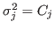
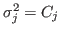
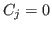
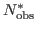
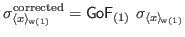

Next: Mighell-Poisson weighted average
Up: Average vs. weighted average
Previous: Weighted average: definition and
Contents
When  and

and

Here we need to eliminate the singularity when 
. In order to do so, we skip data points which are zero.
Then if

is the number of non-zero data points,
where
 is the simple average of the non-zero data points; and of course
is the simple average of the non-zero data points; and of course

Thattil Dhanya
2019-04-08